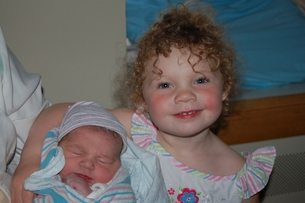
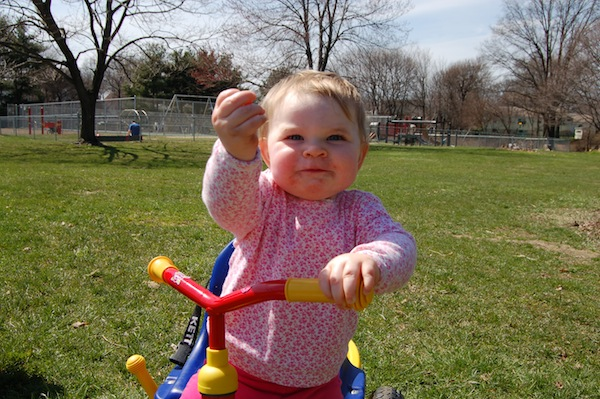
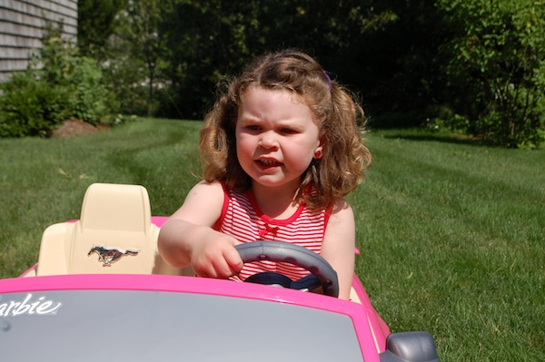
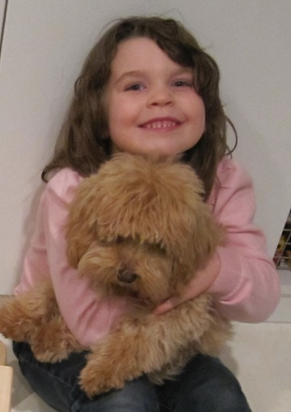
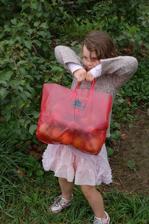

She started off tiny
Before you knew it she was riding her bike
When she was 2 she started drawing...

At 3 she learned how to drive... 
At 4 she got a dog named Chloe. 
At 5 Carolyn got her first job, on an apple farm.

What happens at 6?
Stay tuned!